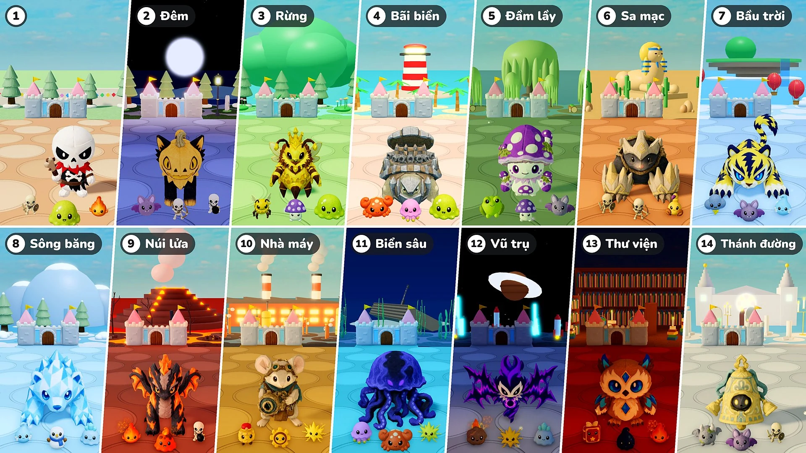

Mùa 2 · Cập nhật 07 · 10 tháng 11

Thủ thành
- Màn chơi: Giờ cứ 10 vòng là một màn. Màn 1 vẫn là thị trấn như trước; từ Màn 2, mỗi màn là một nơi khác nhau, có ánh sáng và thời tiết, mặt đất và đồ trang trí riêng, cùng quái vật, tinh nhuệ và trùm riêng. Sau nơi cuối cùng, các nơi lặp lại từ nơi của Màn 2.
- Trùm: Đổi từ thêm một trùm mỗi 10 vòng thành luôn chỉ một trùm, đi cùng số tinh nhuệ bằng số trùm thêm trước đây (1 ở vòng 15 và 20, 2 ở vòng 25 và 30 …). Từ Màn 2, trùm và tinh nhuệ là thú bông của nơi đó. Nữ Hoàng Mật giờ cũng có thể xuất hiện làm trùm.
- Tinh nhuệ: Tinh nhuệ giờ to gấp 1,15 lần. Từ Màn 2, Máu của chúng tăng 50% mỗi màn, và số sao chúng làm rơi đổi từ 10 thành 10 × số màn (20 ở Màn 2, 30 ở Màn 3 …).
- Quái vật mới: Thêm 16 quái vật mới ở các nơi (Dơi · Cua · Sứa · Ếch độc · Bọ cạp · Mây giông · Linh hồn sương giá · Người tuyết · Slime băng · Slime dung nham · Lính lên dây cót · Bánh răng · Thiên thạch · Sách phép · Giọt mực · Thạch quỷ). Thẻ Quái vật và Trùm trong Bách khoa giờ được chia theo màn.
- Cường hóa chỉ số: Vòng chọn thú bông sẽ không còn Cường hóa chỉ số.
- Vật triệu hồi: Đã sửa lỗi Cường hóa chỉ số không áp dụng cho vật triệu hồi. Giờ nó áp dụng cho ong của Nữ Hoàng Mật, cây của Chíp Mầm và Phân Thân Gương giống như với thú bông, và Cường hóa chỉ số được chọn khi vật triệu hồi đang trên sân sẽ áp dụng ngay.
- Tốc độ ×2: Thêm nút “×2” bên cạnh nút tạm dừng. Bấm để trận đấu chạy nhanh gấp đôi; bấm lần nữa để về tốc độ thường. Thời gian chọn và bước đi của avatar vẫn như cũ. Ở “Chơi cùng”, ai bấm thì cả ván cũng đổi theo.
- Máu thành: Thanh máu của thành to hơn, và số máu hiện ngay cạnh thanh.
Màn và nơi chốn
Các nơi từ Màn 2 cùng quái vật và trùm của chúng. Thú bông xuất hiện làm Trùm hoặc Trùm lớn của một nơi cũng xuất hiện làm tinh nhuệ của nơi đó.
- Màn 2 · Đêm: Dơi · Lính xương cung thủ · Lính xương bom — Trùm: Blissfox · Bông Xù — Trùm lớn: Dreadfox · Pumpcat
- Màn 3 · Rừng: Ong thợ · Nấm độc · Slime — Trùm: Nhím Thông · Mứt Mật — Trùm lớn: Nữ Hoàng Mật — Tinh nhuệ: Chíp Mầm
- Màn 4 · Bãi biển: Cua · Sứa · Slime — Trùm: Cocoblin · Rùa Đá — Trùm lớn: Rocoblin · Rùa Sắt
- Màn 5 · Đầm lầy: Ếch độc · Nấm độc · Dơi — Trùm: Mudpug · Ốc Độc — Trùm lớn: Boghorn · Nấm Bào Tử
- Màn 6 · Sa mạc: Lính xương cận chiến · Lính xương cung thủ · Bọ cạp — Trùm: Bonis · Vuốt Mềm — Trùm lớn: Bonix · Vuốt Thép
- Màn 7 · Bầu trời: Mây giông · Dơi · Linh hồn sương giá — Trùm: Voltis · Chồn Cực Quang — Trùm lớn: Voltiger · Griffion
- Màn 8 · Sông băng: Linh hồn sương giá · Người tuyết · Slime băng — Trùm: Glassy · Shardfin — Trùm lớn: Polarrock · Prismlance
- Màn 9 · Núi lửa: Than hồng · Slime dung nham · Lính xương bom — Trùm: Flamo · Ashgon — Trùm lớn: Flammonyx · Embergon
- Màn 10 · Nhà máy: Lính lên dây cót · Bánh răng · Tia lửa — Trùm: Mouseball · Tích Tắc — Trùm lớn: Optimouse · Obscor
- Màn 11 · Biển sâu: Sứa · Cua · Tia lửa — Trùm: Hydris · Frico — Trùm lớn: Serenis · Abyzel
- Màn 12 · Vũ trụ: Thiên thạch · Tia lửa · Slime băng — Trùm: Voidren · Echowing — Trùm lớn: Voidling · Noisewing
- Màn 13 · Thư viện: Sách phép · Giọt mực · Than hồng — Trùm: Melty · Briarowl — Trùm lớn: Candric · Crystowl
- Màn 14 · Thánh đường: Thạch quỷ · Dơi · Lính xương cận chiến — Trùm: Lilupi · Bé Chuông — Trùm lớn: Radiant · Chuông Vang